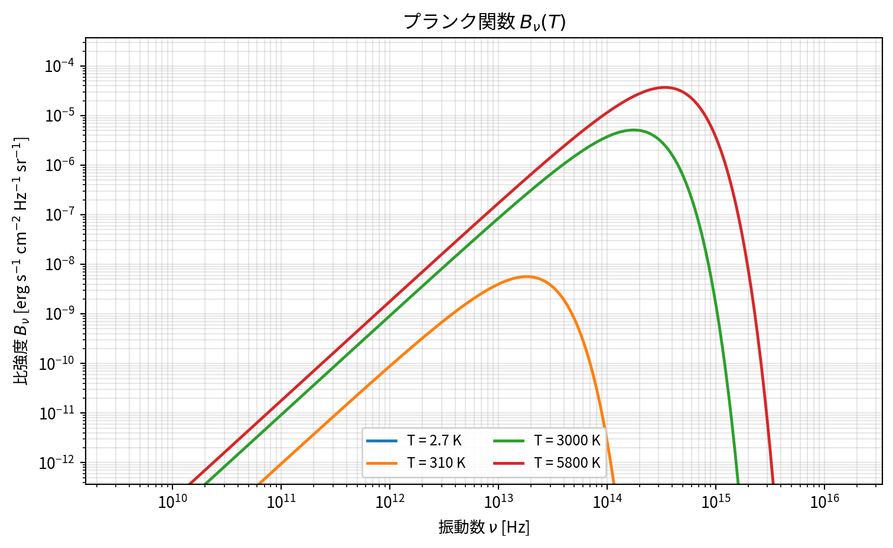
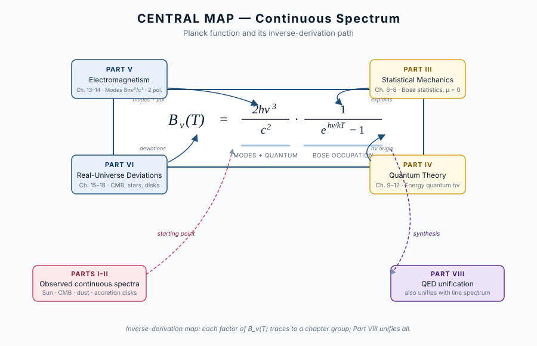

コード
import sys; sys.path.insert(0, "../code")
from planck_curve import plot_planck_with_limits
fig, ax = plot_planck_with_limits(temperatures=(2.7, 310, 3000, 5800))
fig
この章の主題：宇宙のさまざまな場所に現れる黒体放射の実例を概観する。出発点は理論ではなく、観測されるスペクトルそのものである。本書全体を貫く三原則のうち、本章は「① 逆引き」の入口に当たる。

プランク関数（連続スペクトルの地図）
B_\nu(T) = \frac{2 h \nu^3}{c^2} \cdot \frac{1}{e^{h\nu/kT} - 1} \tag{3.1}
| 因子 | 物理的意味 | 結びつく部 |
|---|---|---|
| B_\nu | 観測量（比強度） | 第II部 |
| 1/(e^{h\nu/kT}-1) | 熱平衡・光子統計 | 第III部 |
| h\nu | エネルギー量子 | 第IV部 |
| \nu^3/c^2 | 電磁場のモード密度 | 第V部 |
| 黒体からのずれ | 現実の天体 | 第VI部 |
この章を読み終えると、読者は次のことができるようになる：
[本文目安：B1]
「黒体放射」（blackbody radiation）という言葉は、文脈によって二つの意味で使われる。一つは観測される現象、もう一つは理想化された概念である。両者は密接に関係しているが、混同すると後の議論で迷いが生じやすい。本書ではまず観測の言葉で導入する。
観測の立場から見れば、黒体放射は次の特徴を持つ連続スペクトル（continuous spectrum）として現れる：
これら三つの特徴を持つスペクトルは、宇宙のさまざまな場所で観測される。以下、その実例を一つずつ眺めていく。各事例で重要なのは、「なぜそうなっているか」をすぐ問うのではなく、まず観測される事実そのものを正確に把握することである。なぜそうなるか、つまり「物理」は、第II部以降で逆向きに辿っていく。
用語に注意：「黒体」(black body) という言葉の「黒」は、入射光をすべて吸収する性質に由来する。完全吸収体は同時に最も効率の良い放出体になる（第3章の Kirchhoff の法則）。色が黒いという見た目の話ではない。実際、最も「黒体に近い」太陽は、目には眩しい白〜黄に見える。
[本文目安：B1]
太陽は、地上から最も詳細に観測できる恒星である。可視光から近赤外にかけてのスペクトルを描くと、約 500 nm 付近にピークを持つ滑らかな連続スペクトルが現れる。
観測される事実：
太陽スペクトルは、ピークの位置とスペクトル全体の形状を見るだけなら、温度 5800 K の黒体に非常によく似ている。ところが拡大して見ると、無数の吸収線が走っている。
この「連続成分と線成分の二重構造」は、後の章で詳しく扱う。本書では連続成分（黒体に近い側）を第I〜VI部で、線成分を第VII部で並行に追跡する。両者は別物に見えるが、第5章の放射輸送方程式の上では同じ枠組みで記述される（5.8 連続吸収と線吸収 ― 第VII部への橋渡し 参照）。
[本文目安：B1]
太陽以外の恒星も、それぞれ特有の「色」を持つ。スペクトル型（OBAFGKM）の順に温度が下がり、色がシフトする：
| スペクトル型 | 表面温度 [K] | 見た目の色 | 代表的な恒星 |
|---|---|---|---|
| O | 30,000–50,000 | 青 | \theta^1 Ori C（オリオン大星雲の励起源、O7） |
| B | 10,000–30,000 | 青白 | Rigel |
| A | 7,500–10,000 | 白 | Sirius |
| F | 6,000–7,500 | 黄白 | Procyon |
| G | 5,200–6,000 | 黄 | 太陽 |
| K | 3,700–5,200 | 橙 | Aldebaran |
| M | 2,400–3,700 | 赤 | Betelgeuse |
「色」と「温度」が一対一に対応するのは、すべての恒星が「黒体に近い」連続スペクトルを示すからこそ成り立つ。温度が高いとピーク波長が短く（青側に）、低いと長く（赤側に）なる。この対応は、Wien の法則として第2章で定量化する。
注意（観測）：実際の恒星は表層大気の組成・電離状態によって、黒体スペクトルからのずれが大きい。それでも、ざっくりした分類や全体光度の推定には黒体近似が極めて有効である。「理想からのずれを定量化するために、まず理想がよく定まっている」という構図に注意したい。
[本文目安：B1]
宇宙の「冷たい側」も黒体放射を出す。低温では Wien の法則（第2章）からピークが長波長側に来る：
| 天体 | 温度 [K] | 主な放射帯 |
|---|---|---|
| 地球の昼面 | \sim 290 | 中間赤外（10–15 μm） |
| 木星 | \sim 130 | 遠赤外 |
| 太陽系外縁天体 | 30–50 | 遠赤外 |
| 星間ダスト | 10–30 | 遠赤外〜サブミリ |
| 原始惑星系円盤 | 100–数千 | 近赤外〜遠赤外 |
赤外線天文衛星（Herschel・JWST など）は、まさにこの低温熱放射を観測するために設計されている。
ただし、ダストは厳密には黒体ではない。波長によって放射効率（emissivity）が変化するため、修正黒体（modified blackbody）と呼ばれる形に従う。修正の仕組み自体は第15章で扱うが、ここでは「現実の天体は、しばしば黒体スペクトルにスペクトル指数を掛けた形で見える」ことを覚えておけば十分である。
[本文目安：B1]
宇宙のスペクトルの中で、最も完璧な黒体スペクトルを示すのは ― 宇宙そのものである。
宇宙マイクロ波背景放射（CMB）の観測事実：
CMB の黒体性は驚異的である。観測精度の限界まで、CMB スペクトルは理論的な完全黒体スペクトルと一致する。これは「宇宙史上で最も完璧な黒体放射」と呼んでよい。
なぜこれほど完璧な黒体スペクトルが宇宙全体に存在するのか ― この問いは本書全体の重要な動機の一つである。
熱化（thermalization）と自由伝搬の開始を分けて理解する必要がある：
つまり「再結合期に黒体になった」というよりは「再結合期までに完成した黒体スペクトルが、再結合期に解放された」と理解するのが正確である。詳しくは第16章で扱う。
対応（観測）：CMB の黒体性は、宇宙が「熱平衡を経た過去」を持つことの直接的証拠である。これは ビッグバン宇宙論の最強の観測的支柱の一つになっている。
問い：なぜ CMB だけがこれほど完全な黒体スペクトルになるのか？
短答：宇宙が再結合期（誕生後約 38 万年）まで、放射場と物質が密に相互作用し、長時間・高密度の条件下で完璧な熱平衡を達成したから。光学的にきわめて厚い状況が、宇宙という最大スケールで実現していた。
もう一歩：再結合以降、放射と物質が分離（decoupling）したあとも、宇宙膨張は黒体スペクトルの「形」を保存する（断熱不変量としての性質）。だから現在の 2.725 K の CMB も完璧な黒体形を保つ。詳しくは第16章。
[本文目安：B2]
激しい現象も、局所的にはしばしば黒体に近い。例：
| 天体 | 温度 [K] | 主な放射帯 |
|---|---|---|
| 白色矮星表面 | \sim 10^4 | 紫外〜可視 |
| 中性子星表面 | 10^6–10^7 | 軟 X 線 |
| 降着円盤（連星系・AGN） | 10^4–10^8 | 紫外〜硬 X 線 |
| ガンマ線バースト（プロンプト準熱的成分） | 10^9 以上 | ガンマ線（解釈は議論中） |
ガンマ線バースト（GRB）の 残光（afterglow） はシンクロトロン優勢の 非熱的放射 であり、本表の対象外（§1.9 と整合）。本表に含めた GRB プロンプト相は、Band 関数で記述される連続光のうち準熱的成分の解釈に対応する。
降着円盤の場合、半径ごとに異なる温度の黒体スペクトルが合成される。これを 多温度黒体 または 多温度円盤スペクトル と呼ぶ。各半径では「局所的に黒体近似」が成り立つ、というのが暗黙の仮定であり、第18章で詳しく扱う。
激しい場でも局所的に黒体近似が成り立つのは、熱化時間が流体力学的時間スケールより短い限り、放射場と物質が十分に相互作用して熱平衡に近づくからである。この「局所熱平衡」（LTE）という概念は、第5章の放射輸送と、第6章の熱平衡で本格的に扱う。
[本文目安：B2]
これまでの例を振り返ると、「黒体に近い」と言われる天体には、いずれも近似が入っていることがわかる。観測対象としての「黒体」と、概念としての「黒体」を、ここで明確に区別しておきたい。
理想化された黒体に課されている三つの条件：
現実の天体は、これらの条件をどこまで満たすかで「黒体に近い」かが決まる：
| 天体 | 条件 1（完全吸収） | 条件 2（熱化） | 条件 3（単一 T） |
|---|---|---|---|
| 太陽 | △（外層は不完全） | ◯（光球は熱化） | △（線吸収あり） |
| 恒星一般 | △ | ◯ | △ |
| ダスト | ✗（修正黒体） | ◯ | △ |
| CMB | ◯ | ◯ | ◯ |
| 降着円盤 | ◯（局所） | ◯（局所） | ✗（多温度） |
つまり、黒体は実在する物体ではなく、観測スペクトルを比較するための基準である。本書では各章で、観測スペクトルがこの基準からどれだけ・なぜずれるかを順に解き明かしていく。とりわけ第VI部（第15–18章）は、まさに「黒体からのずれ」を主題にしている。
[本文目安：B1]
ここまで「連続スペクトル」を中心に話してきたが、上の例（特に 1.2 の太陽）で見たように、観測スペクトルにはしばしば 線スペクトル が重なっている。両者は本書の二つの主柱である：
両者は別物に見えるが、第II部の放射輸送方程式（第5章）の上では、同じ枠組みで記述される。違いは吸収係数 \alpha_\nu の構造だけである：
詳しくは 5.8 連続吸収と線吸収 ― 第VII部への橋渡し で扱う。本書の最終章（第VIII部）では、QED の言葉で連続と線が同じ電磁場–物質相互作用の二側面であることが明らかになる。
[本文目安：B1]
連続スペクトルにはもう一つ重要な区別がある。熱的放射（thermal radiation）と非熱的放射（non-thermal radiation）である。前節で「連続と線」を本書の二本柱として整理したが、その連続側にもう一つの軸が走っている。
| 区別 | スペクトル形を決める量 | 代表例 |
|---|---|---|
| 熱的 | 温度 T のみ | 黒体放射、熱的自由–自由、LTE 線 |
| 非熱的 | 粒子分布 f(E) | シンクロトロン、逆 Compton、曲率放射 |
本書の焦点：本書は主として熱的放射を扱う。プランク分布の三層構造（熱平衡・量子化・モード密度）を逆引きするのが第I〜V部、現実の天体での熱的放射の「ずれ」が第VI部、線スペクトル（多くは LTE / non-LTE の枠で扱う）が第VII部、QED 統合が第VIII部。
非熱的放射は本書の中心テーマではないが、観測スペクトルの解釈に必要な範囲で触れる：
非熱的放射の本格的扱いには、本書を超えた専門書（Rybicki & Lightman の第6章以降、Longair High Energy Astrophysics など）に進むのがよい。
用語：「熱的」「非熱的」は astro-dic.jp の標準訳。LTE / non-LTE とは別の概念なので注意：
非熱的電子（べき則）の集団が出すシンクロトロンの周りにある原子ガスは、独立に LTE でも non-LTE でもありうる。両軸は直交する。
問い：黒体放射は「熱的」だが、それなら CMB はどう分類すべきか？
短答：CMB は完全に熱的。再結合期に光子と物質が完全な熱平衡に達し、その黒体スペクトルが膨張で温度を下げながら（形を保ったまま）今日まで残っている。
もう一歩：「2.725 K 黒体スペクトル」が宇宙最大スケールの熱的放射の典型例である。一方、CMB の温度ゆらぎ（\Delta T/T \sim 10^{-5}）は初期宇宙の量子ゆらぎが膨張で増幅されたもので、熱平衡の統計ゆらぎ起源ではないが、各方向のスペクトル形そのものは依然として熱的（プランク分布）のまま。「非熱的（粒子のエネルギー分布がべき則）」とは別の意味で「熱起源でない」点に注意 ― スペクトル（縦軸：強度 vs 振動数） と 空間ゆらぎ（方向ごとの温度の違い） を混同しないことが重要。
[本文目安：B1]
通常の物理教科書は、まず統計力学・量子論・電磁気学を学び、その応用例として黒体放射を最後に扱う。本書はその順序を反転させる：
通常の教科書：
基礎物理（統計・量子・電磁気）→ 応用：黒体放射
本書：
観測：黒体スペクトル → 逆引き → 基礎物理具体的には次の流れになる：
各部の冒頭には「この部で答える問い」と「中心地図」が再掲され、読者は常に自分が中心地図のどの因子を解き明かしている途中かを確認できる。
[本文目安：B1]
「同じ関数形が温度だけで形を変える」ことを実際に見てみよう。次のコードは、太陽（5800 K）、低温の恒星（3000 K）、人体（310 K）、CMB（2.7 K）のプランク曲線を比較する。
注意：プランク関数 B_\nu(T) の具体的な式は本章では「天下り的には」与えない。式の構造と各因子の意味は第2章で扱う。ここでは、観測される多種多様な「黒体スペクトル」が一つの曲線族にすぎないことを、視覚的に確認するのが目的である。
import sys; sys.path.insert(0, "../code")
from planck_curve import plot_planck_with_limits
fig, ax = plot_planck_with_limits(temperatures=(2.7, 310, 3000, 5800))
fig
ここで重要なのは、4つの曲線が異なる温度（4桁の範囲）にもかかわらず、すべて同じ関数族 B_\nu(T) に属する、という一点である。本書はこの関数族を「中心地図」として、その背後の物理を逆引きで解き明かしていく。
中心地図に戻る
本章では、本書の中心地図であるプランク関数 B_\nu(T) について、その観測される現れ方を整理した：
すべてが同じ「黒体に近い」スペクトル形を示し、温度 T だけが形を決めている。ただし「黒体」は実在する物体ではなく、観測スペクトルを比較するための理想化された基準である。
次章へ：第2章では、観測スペクトルから温度・半径・光度をどう読み取るかを、Wien 則・Stefan–Boltzmann 則・色温度などの道具を使って具体的に学ぶ。中心地図プランク関数のどの因子がどの観測量に対応するかが、第2章の中心テーマである。
演習問題は、本書全体の章構成が固まったあとに、各部を通じて統一的に作成する予定。